큐레이션은 이미 강하다
랭킹·신작·태그·테마 이벤트·추천·UGC 제작을 한 화면에서 순환시킨다. 무엇을 할지 모르는 유저를 “캐릭터/상황 선택”까지 데려가는 능력은 중상급이다.
DLsite appx / DLsite GamePlay / 니지GAME / PinxAI / DMM 캐릭터 토크 / FANZA 캐릭터 채팅 / DMM GAMES를 기준으로, 큐레이션이 게임보다 상단에 놓이는 구조와 캐주얼 퍼즐에 붙일 메타의 기회를 검토했다.
랭킹·신작·태그·테마 이벤트·추천·UGC 제작을 한 화면에서 순환시킨다. 무엇을 할지 모르는 유저를 “캐릭터/상황 선택”까지 데려가는 능력은 중상급이다.
호감도·감정·스킬·엔딩을 텍스트로 선언하지만, 실제 상태 머신이 아닌 프롬프트 규칙인 사례가 많았다.
직접 플레이에서는 유저가 “호감도 70”을 입력하자 값이 그대로 바뀌었다.
퍼즐 결과를 서버가 확정하고, 그 결과가 캐릭터의 반응·관계·다음 에피소드·수집 요소를 바꾸게 만들면 기존 시장의 가장 약한 연결고리를 정확히 공략한다.
| 대상 | 주 역할 | 수위 | 게임 밀도 | 큐레이션 | 메타 연결 | 확인 수준 |
|---|---|---|---|---|---|---|
| DLsite appx | 판매 카탈로그 | 4/5 | 5/5 | 4/5 | 작품별 편차 | 화면 직접 확인 |
| DLsite GamePlay | 구매작 웹/클라우드 실행 | 작품별 | 5/5 | 2/5 | 전송·실행 중심 | 공식 문서 |
| 니지GAME | 기본무료 브라우저 게임 허브 | 5/5 | 2~5/5 | 4/5 | 게임별 편차 | 화면 직접 확인 |
| 推しコレクション 최애 컬렉션 | UGC 캐릭터·시나리오 채팅 | 5/5 | 1~2/5 | 4/5 | 프롬프트 중심 | 직접 플레이 |
| PinxAI | AI 채팅·이미지·스토리 | 5/5 | 1/5 | 3/5 | 대화 중심 | 홈 직접 확인 |
| DMMキャラトーク DMM 캐릭터 토크 | 7개 공급사 통합 AI 캐릭터 허브 | 2/5 | 1~2/5 | 4/5 | 장르·스토리 중심 | 직접 화면·1,372건 |
| FANZA キャラチャット FANZA 캐릭터 채팅 | 15개 공급사 통합 성인 AI 채팅 허브 | 5/5 | 1~2/5 | 4.5/5 | 프롬프트 게임화 | 직접 화면·13,924건 |
| DMM GAMES | 대형 게임 유통·운영 허브 | 혼합 | 5/5 | 5/5 | 게임별 편차 | 홈·상세 직접 확인 |
수위는 노출·성인 소재의 강도, 게임 밀도는 실제 규칙·입력·결과·보상 루프의 비중이다. 5점은 “좋다”가 아니라 “강하다/많다”를 뜻한다.
2026-09-15 공개 목록 기준으로 니지GAME R18의 PC 2페이지 36개와 모바일 7페이지 138개를 전수 집계했다.
PC 36개는 아래에 작품별 형식을 모두 기록했다.
결제·포인트 차감은 실행하지 않았으며, 로그인 뒤에만 나타나는 개별 가격은 미검증으로 남겼다.
Android용 게임/APP GENERATOR 작품을 정가·할인가로 한 번 구매한다.
게임 본편이 상품이고, 대표 공개 사례는 22~495엔 할인 가격으로 판매됐다.
이미 구매한 PC 동인게임을 웹·클라우드에서 실행하는 계층이다. 2025년 공식 실험은 대상 구매작을 추가 비용 없이 스마트폰에서 실행했다.
새 과금모델이 아니라 접근성 확장회비 없이 시작하고, 아이템·가챠·게임 내 디지털 콘텐츠에 니지코인을 쓴다.
코인은 카드·Amazon Pay·전자머니·편의점·넷뱅킹·viviON 포인트 등으로 충전한다.
메시지, 생성 이미지, 대화 모델, 이벤트 대화 등 상호작용을 포인트로 판다. 일부는 무제한·정액을 전면에 내세우지만 단위와 가격은 공급사마다 다르다.
콘텐츠가 아니라 관계의 지속에 과금PC와 모바일은 중복 노출이 있으므로 합산해 “174개 고유 게임”이라고 부르면 안 된다.
모바일 105개 ADV는 대부분 스마트폰 전용 고정 시나리오·CG·음성형 작품으로, 라이브 RPG보다 패키지/에피소드 열람에 가깝다.
| 형식 | 핵심 루프 | 붙는 메타 | 주 과금 지점 | 우리 관점 |
|---|---|---|---|---|
| AI·UGC 채팅 | 캐릭터/상황 선택 → 자유입력 → 생성 응답 → 기록 | 기억·성격·호감도·시나리오 제작 | 메시지·모델·이미지 생성 PT | 큐레이션 강함, 서버 상태 강제력 약함 |
| 실시간 메일형 | 상대 선택 → 메시지 → 대기/답장 → 이벤트 | 관계 단계·시간성·개인화 | 송신권·이벤트 대화·정액 | 게임보다 관계 서비스에 가까움 |
| 선택형 채팅 ADV | 장면 → 선택지 → 연출/대사 → 다음 화 | 루트·에피소드·CG | 화/루트 해금·선택권 | 웹드라마 자산과 결합이 가장 쉬움 |
| 수집형 카드 RPG | 가챠/수집 → 편성 → 전투 → 강화 | 캐릭터·호감·성인 보상·이벤트 | 가챠·스태미나·강화재료 | 검증된 매출 구조지만 제작량이 큼 |
| 방치·자동전투 RPG | 방치 보상 → 일괄 강화 → 자동 전투 → 스테이지 | 변신·인연·등급·로그인 보상 | 가챠·성장 팩·VIP·가속 | 코어 조작은 얕고 메타 비중이 높음 |
| 캐릭터 제작 SRPG | 캐릭터 빌드 → 임무/전술 → 성장 → 커뮤니티 | 스킬·외형 업로드·국가/길드 | 빌드 편의·행동/성장 재화 | UGC 충성도는 높지만 진입장벽 큼 |
| 경영·전쟁 SLG | 생산/경영 → 영웅 육성 → 공성/길드 → 확장 | 후궁·지원 캐릭터·연맹·랭킹 | 가속·VIP·영웅/장비 | 장기 LTV형, 캐주얼 퍼즐과 거리가 있음 |
| 커스터마이즈 전투 | 파츠 조립 → 3무기 선택 → 초단기 자동전투 → 갱신 | 외형·성능·수집 | 파츠·재료·추가 시도 | 현재 회사 역량과 가장 가까운 게임형 |
| 클리커·메달 액션 | 클릭/투입 → 즉시 보상 → 자동화/해금 → 반복 | 수집·퍼즐 노출·하렘 확장 | 부스트·자동화·메달/시도권 | 개발은 가볍지만 콘텐츠 수명 설계 필요 |
| # | 작품 | 표시 장르 | 실제 형식·반복 루프 | 메타/과금 연결 | 근거 |
|---|---|---|---|---|---|
| 1 | AIパートナーハチロク | 채팅 | AI 대화·이미지/시나리오 제작·공개 UGC | 파트너 관계·착장·창작; 대화/생성 PT, 공개 시 포인트 환원 | 상세 |
| 2 | 神楽大戦・陰之巻 | RPG | 무녀/요괴 수집·편성·퇴마 카드 전투 | 언령·도감·성인 보상; 가챠/육성형 | 상세 |
| 3 | Pinxai | 채팅 | 캐릭터/스토리 탐색·AI 대화·이미지 생성 | 스토리 UGC·모델 선택; 메시지/생성 크레딧 | 직접 화면 |
| 4 | めるぺろ | 채팅 | 실시간 메일 송수신·답장 대기·관계 이벤트 | 개인화 답장·시간성; 대화/이벤트 소비 | 상세 |
| 5 | パコホ | 채팅 | 모바일 중심 자유 대화 | ‘이용료를 신경 쓰지 않는 무제한’ 소구; 정확한 정액 조건 미검증 | 목록 |
| 6 | 推しコレクション | 채팅 | UGC 캐릭터/상황 선택 → 자유입력 → 상태 요약 | 호감도·일기·히스토리; 메시지당 포인트 | 직접 플레이 |
| 7 | どM娘 | 채팅 | 테마 캐릭터 선택·메시지·관계 진전 | 관계/장면 해금; 대화 포인트형 | 목록 |
| 8 | 透視催淫 | 채팅 | 상황형 캐릭터 채팅 | 대화·장면 진행; 작품별 포인트 | 목록 |
| 9 | アライアンスセージ | RPG | 캐릭터 수집·던전 공략·성장 | 수집/장비/육성; 아이템·가챠형 | 상세 |
| 10 | ももメモ | 채팅 | 상황 카드 교체·AI 대화·기억 누적 | 성격 육성·메모리; 메시지/카드 소비 | 상세 |
| 11 | 巨乳温泉 | 채팅 | 장소/인물 기반 실시간 대화 | 관계·이벤트 장면; 대화 포인트형 | 목록 |
| 12 | おっぱいラボ学園のお姫サマ戦略 | RPG | 캐릭터 육성·편성·전투 | 학원/공주 수집·성장; 아이템·가챠형 | 상세 |
| 13 | 英雄クロニクル | RPG | 캐릭터 빌드·전술 임무·국가 경쟁 | 200+ 능력/스킬·외형 업로드·커뮤니티 | 상세 |
| 14 | もふちゃ！ | 채팅 | 캐릭터 선택·자유 대화·재방문 | 관계/장면; 대화 포인트형 | 목록 |
| 15 | AIカノジョ | 채팅 | AI 대화 + 별도 모험 모드 | 회화 PT·모험 보상; 관계와 플레이의 혼합 시도 | 목록 |
| 16 | 人妻と秘密の交換日記 | 채팅 | 교환일기형 메시지·관계 진행 | 대화/일기 이벤트; 포인트형 | 목록 |
| 17 | 性感コネクト | RPG | 캐릭터 수집·복구·방치 성장·전투 | 등급/육성/장면; 가챠·성장 팩형 | 목록 |
| 18 | 億万長者 | 시뮬레이션 | 사업 경영·인재/캐릭터 수집·세력 확장 | 자산·관계·랭킹; 가속/VIP/패키지형 | 목록 |
| 19 | 空戦乙女 | RPG | 전투기 캐릭터 편성·임무·PMC 경영 | 기체/캐릭터 수집·강화; 가챠/자원형 | 상세 |
| 20 | AImelo | 채팅 | AI 캐릭터 탐색·1:1 대화 | 개인화 관계; 메시지 포인트형 | 목록 |
| 21 | ビーナスライブ R18 | 채팅 | 실시간 음성/라이브 대화 | 라이브 접속·대화 시간; 시간/행동 소비형 | 목록 |
| 22 | 抜けるAVは俺が作る！ | 채팅 | 제작자 역할의 상황형 채팅·이벤트 | 진행 장면·대화; 포인트형 | 목록 |
| 23 | プエラエクスマキナ | RPG | 파츠 조립 → 무기 3개 선택 → 초단기 자동전투 | 외형/성능 파츠·재료·수집 | 상세 |
| 24 | ラスト・ロストパラダイス | RPG | 캐릭터 수집·편성·자동전투/성장 | 등급·보상·이벤트; 가챠/성장형 | 목록 |
| 25 | 勇者なんてお断りX！ | RPG | 70명+ 캐릭터 수집·이세계 모험·전투 | 캐릭터/장비 성장; 가챠형 | 목록 |
| 26 | ハーレムオブヴァルキュリア | RPG | 파티 편성·자동/스테이지 전투·강화 | 캐릭터 각성·신규 보상; 가챠/팩형 | 목록 |
| 27 | ロボっ娘中出し発情学園 | 채팅 | 학원 캐릭터 선택·상황 대화 | 관계/장면; 대화 포인트형 | 목록 |
| 28 | 淫獄の交歓ぷりんせす | RPG | 방치 보상·캐릭터 수집·자동 성장 | SSR/UR·변신·인연·1000연 가챠 소구 | 상세 |
| 29 | 騎士と翼のフロンティアR | RPG | 여신/기사 수집·파티 전투·스테이지 | 캐릭터·장비·육성; 가챠형 | 목록 |
| 30 | メダルトス開運神社 | 액션 | 메달 투입 → 퍼즐 이미지 제거 → 보상/해금 | 메달·추가 시도·해금 | 목록 |
| 31 | ぬぷぬぷっ！夜伽話 | RPG | 캐릭터 수집·자동전투·육성 | 동화 캐릭터·타락/장면; 가챠형 | 목록 |
| 32 | 恋華煌姫 | 시뮬레이션 | 영지/무장 육성·전략 전투·세력 확장 | 영웅/자원·가속·랭킹 | 목록 |
| 33 | チョイスる！ | 채팅 | 애니형 장면 → 선택 → 대사/관계 전개 | 에피소드·선택/대화 진행 | 상세 |
| 34 | 推し神カオティック | RPG | 신 캐릭터 수집·방치 육성·전투 | 등급/성장/관계; 가챠형 | 목록 |
| 35 | 煌星三国R | 시뮬레이션 | 무장 육성·편성·전역·군단 공성 | 미녀 지원·육궁·길드·가속/영웅 | 상세 |
| 36 | Hentai Clicker | 시뮬레이션 | 클릭 → 자원 → 동료/자동화 → 하렘 확장 | 캐릭터·부스트·자동화 | 상세 |
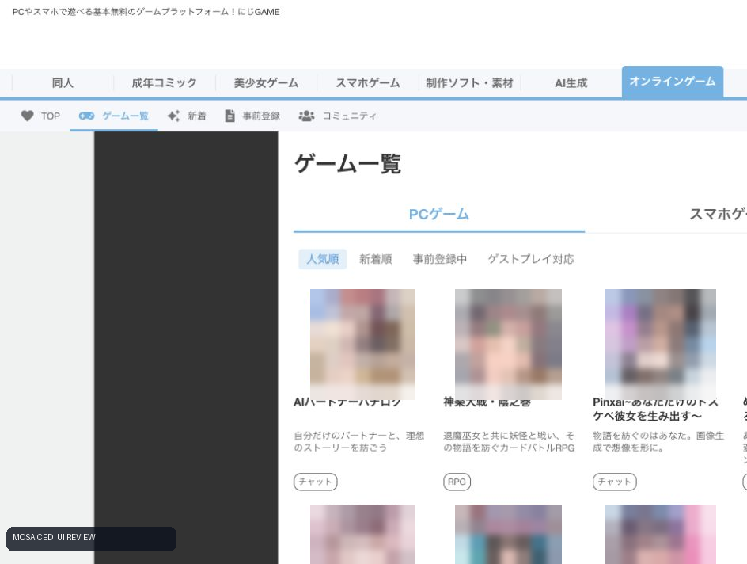
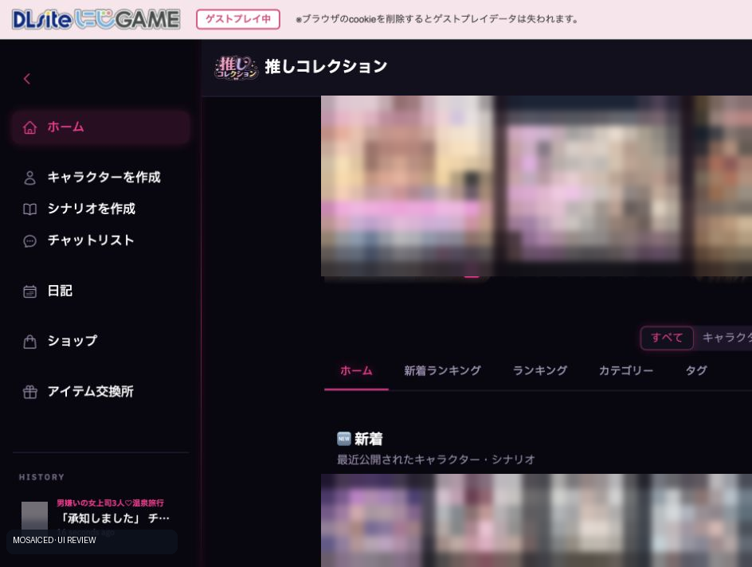
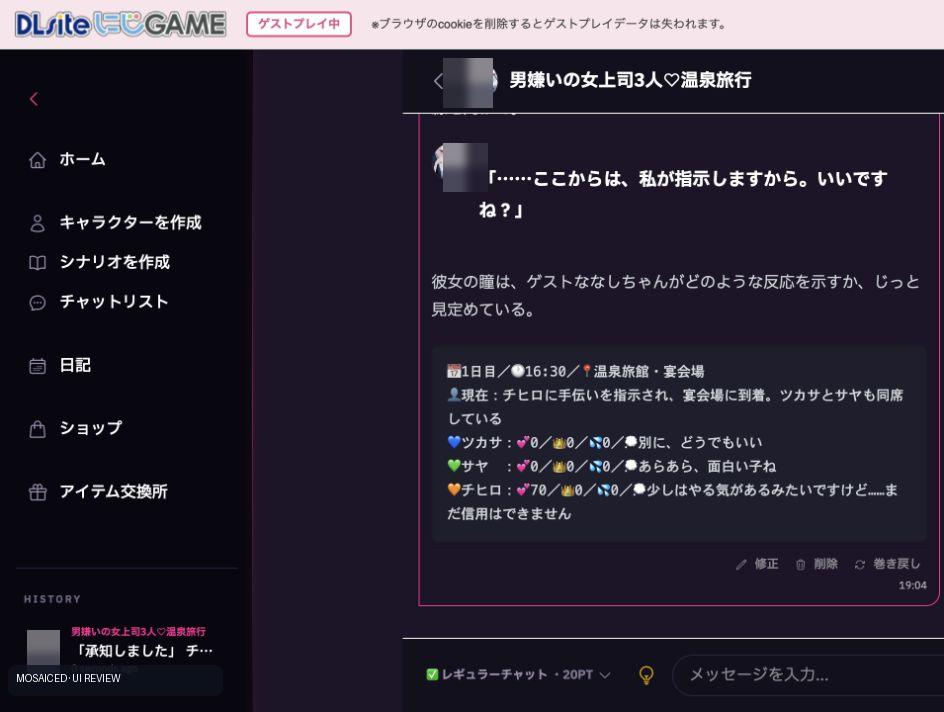
날짜·시간·장소·현재 상황·캐릭터별 감정값을 매 응답 하단에 출력해 시뮬레이션처럼 보이게 한다.
그러나 값이 서버 규칙으로 보호되지 않아 유저 명령이나 모델 누락에 흔들린다.
일부 제작자는 상태 출력이 빠지면 이전 대화를 복사해 넣으라고 안내한다.
상품 큐레이션 밀도와 가격 신호는 강하지만, 공통 메타가 작품의 실제 플레이 상태까지 연결되는 플랫폼은 아니다.
유저 제공 예시 RJ01091171은 이번 자동 접근이 차단되어 상품명·내부 루프를 추정하지 않았다.
“게임+PinxAI” API로 확인된 것이 아니라 구매 게임을 웹에서 실행하는 전송 계층이다.
연동 가능성은 사업/기술 담당자에게 대응 규격, 세이브 접근, 외부 오버레이 허용 여부를 별도 확인해야 한다.
공통 헤더와 계정·결제·커뮤니티를 제공하고 실제 게임은 제작사별로 크게 다르다. 게스트 플레이 목록은 직접 확인 당시 채팅형에 편중돼 있었다.
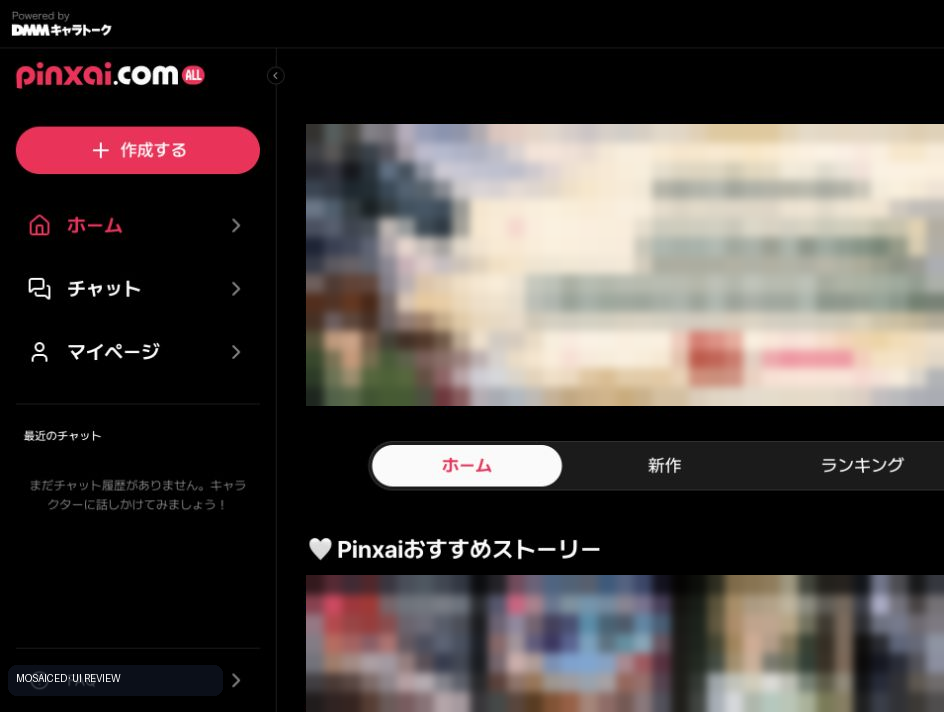
all.pinxai.com 실제 홈. 좌측에 제작·홈·채팅·마이페이지, 본문에 추천 스토리·신작·랭킹이 배치된다.이 화면은 니지GAME 상품 상세가 아니라 PinxAI 자체 서비스 UI다.
상단에 DMMキャラトーク 제공 표시가 있으며, DMM의 최신 IP 스토리 링크도 이 도메인으로 연결된다.
대화가 본편이고, 게임 플레이 결과를 받아 반응하는 양방향 연동은 확인되지 않았다.
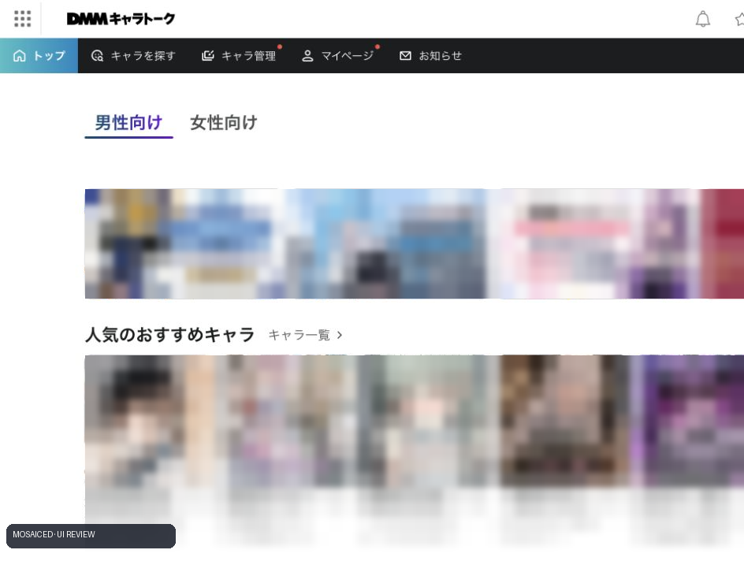
7개 제공사·여성 캐릭터 1,372건이 확인됐다.
공식 태그에 대화형·통화형·비디오형뿐 아니라 RPG·시뮬레이션·카드·테이블·탈출·육성이 있어 게임형 시도를 찾기 쉽다.
다만 홈의 인기 카드는 설명문 위주이고, 실제 규칙 강제력은 제공사별로 확인해야 한다.
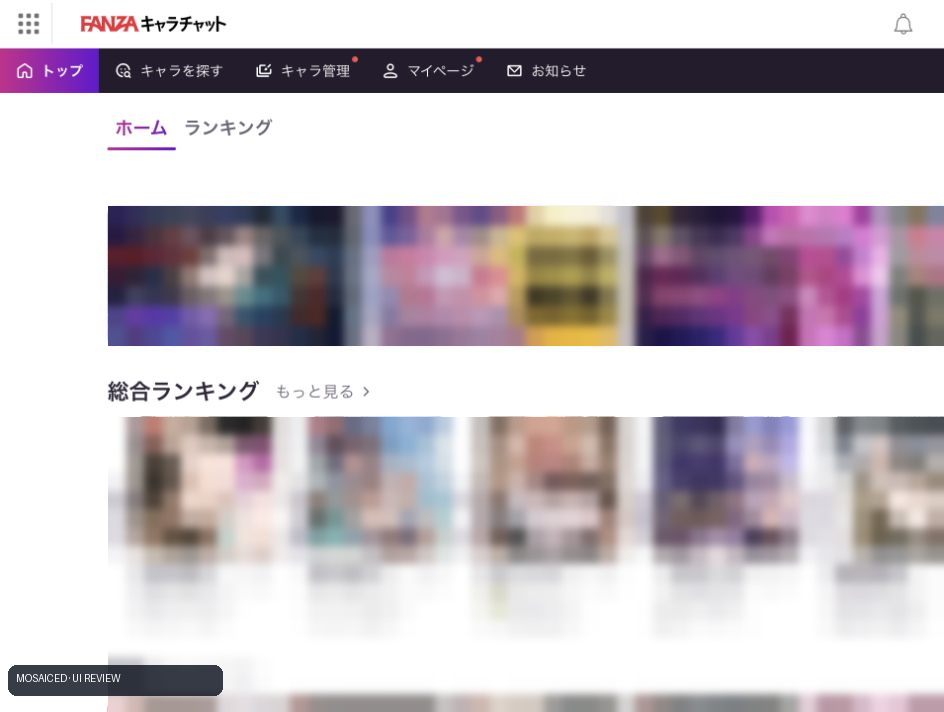
15개 제공사·여성 캐릭터 13,924건이 확인됐다.
FANZA가 게임을 직접 돌리는 구조가 아니라, 발견·신뢰·결제·랭킹을 통합하고 실제 채팅은 Deev·PinxAI·Ucandychat 등 제공사로 넘긴다.
큐레이션은 높게 완성됐지만 품질과 규칙 신뢰성은 공급사 편차가 크다.
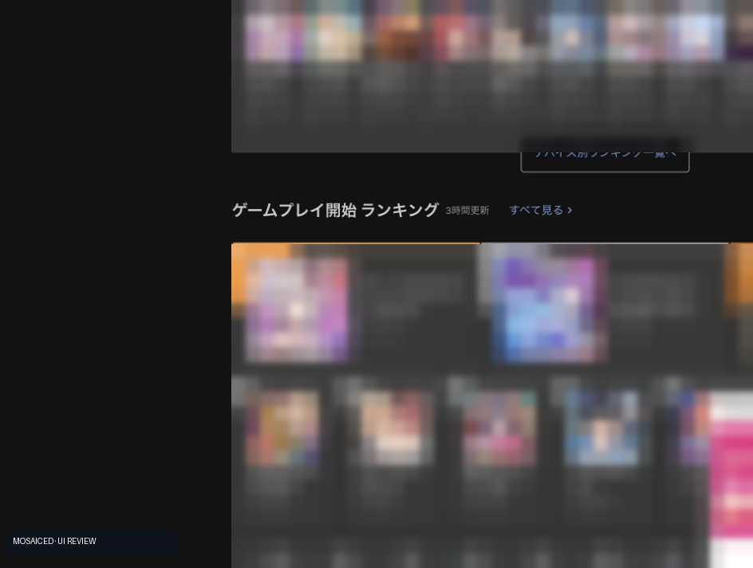
약 4,000만 등록 이용자, 기본무료 브라우저 게임 약 200종, 다운로드 판매 약 1,500종, 구독형 200종 이상을 자체 설명한다.
인기·신작·사전등록·기기별·플레이 시작 랭킹, 이벤트 보상까지 큐레이션이 가장 촘촘하다.
실제 게임 실행은 로그인에서 멈췄으며 결제·설치는 수행하지 않았다.
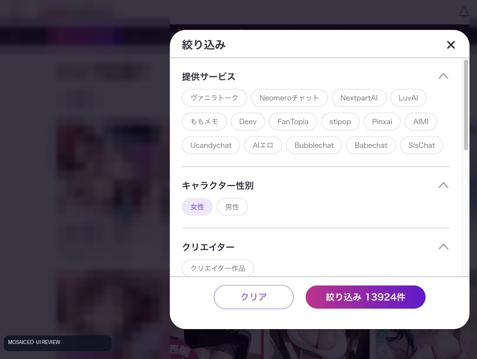
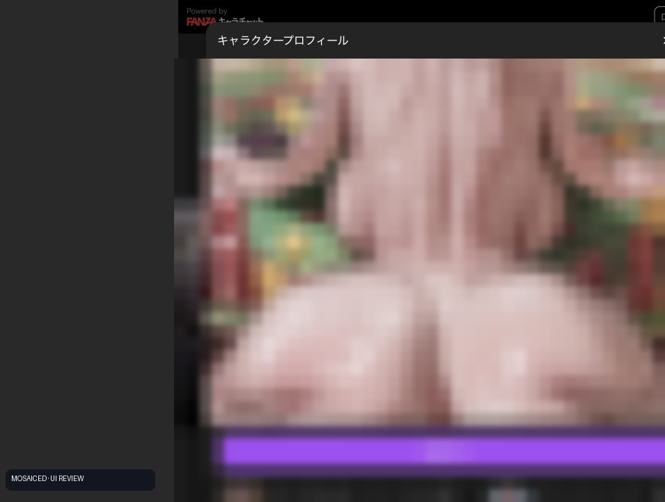
카지노 8종, 7명의 캐릭터, 1,800장 이상 이미지를 전면에 내세운다.
실제 조작은 !슬롯 같은 명령을 채팅에 입력하면 AI가 규칙·베팅 패널·결과를 두 턴에 걸쳐 생성하는 방식이다.
재화 10만, 운 게이지, 호감도, 6단계 랭크, 층 해금, 라이벌 최종전까지 설계 문서는 촘촘하지만, 제작자 안내가 상위 AI 모델/대화 모드를 권장하고 명령어 형식을 엄격히 요구한다.
| 표본 | 표기 볼륨 | 붙인 메타 | 연결고리 판정 |
|---|---|---|---|
| 네온 RAKUEN | 1,800+ 이미지·7인 | 8종 카지노, 재화·운·호감도·랭크 | 프롬프트 명령형. 설계는 깊지만 서버 게임 여부 미확인 |
| 모브사이코 | 33,000+ 이미지·100인 | 고정 줄거리 없는 판타지 샌드박스 | 볼륨 최상, 자유도 최상, 상태 신뢰성은 모델 의존 |
| 루멘시티 이능 아카데미아 | 10,600+ 이미지·28인+ | 수업·도시 의뢰·사건·관계 | 대규모 세계관 시뮬레이션형 |
| 아카데미 스토리 | 2,700+ 만화 이미지·BGM | 학원 장기 여정 | 게임보다 멀티미디어 라노벨에 가까움 |
| 그리드 퀸즈 | 2,000 이미지·4인 | 레이서/감독 역할, 팀·의상·장소 | 레이싱 분위기는 강하나 실제 레이스 규칙은 불명확 |
판정: FANZA의 상위권은 ‘몇 장/몇 명/몇 모드’로 볼륨을 정량 판매한다.
하지만 이미지 수는 콘텐츠 밀도이지 게임 밀도가 아니다.
명령어·상태창·랭크가 있어도 결과 권위가 AI 응답에 있으면 고퀄 게임 결합으로 보지 않았다.
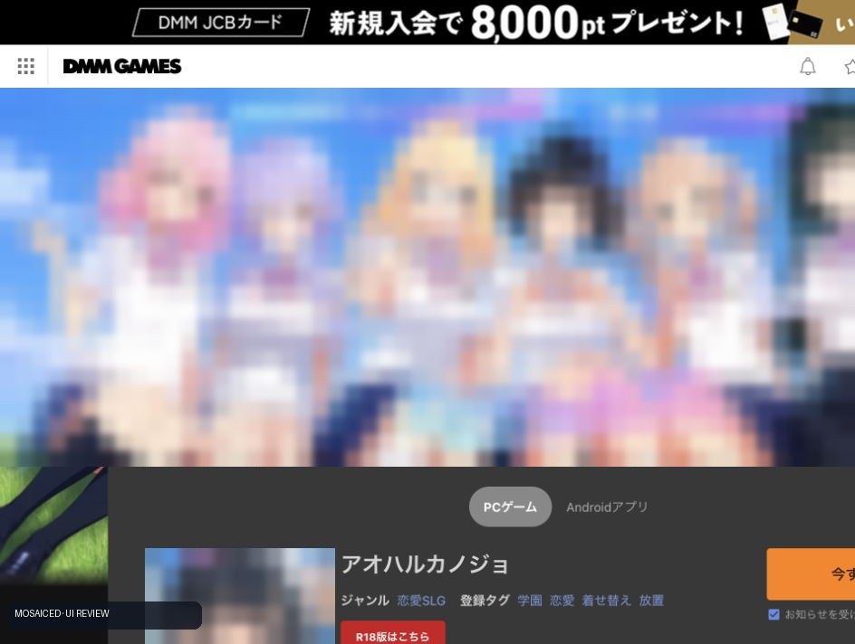
연결 판정: ‘자유 AI 채팅’보다는 선택형 연애 SLG에 대화 반응을 붙인 제품 설명이다.
메타가 스틸·의상·데이트로 닫힌다는 점은 좋지만, 실제 실행은 DMM 로그인에서 멈춰 상태 권위와 생성 범위를 검증하지 못했다.
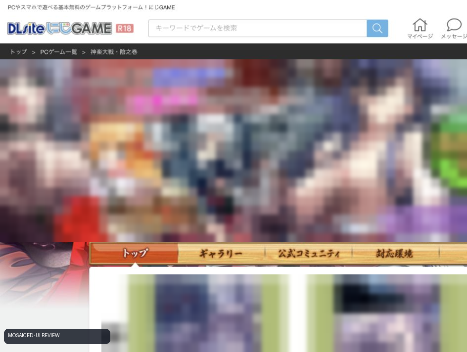
밀도: 실제 카드/RPG 루프가 중심. 캐릭터 메타는 수집 동기와 성인 보상에 붙는다. 로그인이 필요해 내부 전투는 미검증.
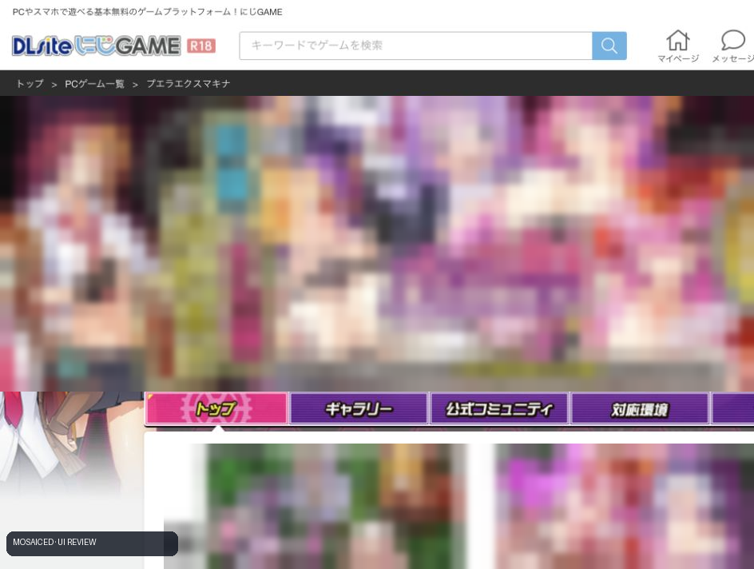
밀도: 짧은 코어 루프와 외형 커스터마이즈가 강하게 맞물린다. 회사의 캐주얼 퍼즐 역량과 가장 가까운 참고 유형.
밀도: 자유 생성보다 연출 통제가 쉽고, 웹드라마 팀의 제작 자산을 옮기기 유리하다. 다만 실제 플레이는 로그인 장벽으로 미검증.
게임 후 별도 채팅방, 동일 캐릭터 이미지만 공유. 서로의 상태를 모른다.
시장에 흔함동일 IP·세계관·에피소드가 이어지지만 플레이 결과는 대화에 제한적으로 반영된다.
DMM의 IP 스토리 채팅게임이 확정한 결과·재화·선택·실패가 캐릭터 기억과 다음 콘텐츠를 바꾼다.
이번 표본에서 완성형 미발견아래는 조사 당시의 초기 기획 가설입니다. 현재 게임 제안 5안 보기 →
카페·숙소·동네를 퍼즐로 복구하고, 복구 결과가 인물들의 일·관계·사건을 바꾼다. 중장년 여성 타깃에 적용하기 가장 자연스럽다.
퍼즐에서 단서를 정리하고 파트너와 추리를 조율한다. AI는 답을 만드는 것이 아니라, 확보한 단서 범위에서 역할극과 힌트를 제공한다.
한 판의 승패·플레이 스타일을 인물이 기억하고, 클럽 내 관계와 초대 이벤트가 열린다. 게임성과 캐릭터 애착의 연결은 강하지만 장르 장벽이 있다.
상대 팀은 게임을 붙여본 팀이 아니므로 “게임 설계 경험”을 묻기보다, 선형 영상/라노벨형 콘텐츠를 반복 운영하며 얻은 제작·검수·수명·R&R 데이터를 뽑아내는 질문으로 바꿨다.
| 산출물 | 8F 게임팀 | 7F 웹드라마/AI팀 | 공동 승인 |
|---|---|---|---|
| 상품 컨셉·타깃·KPI | 퍼즐/리텐션 가설 | 캐릭터/소비 가설 | PO + 양팀 리드 |
| 코어 루프·상태 스키마 | A/R 규칙·서버 상태·보상 | C 서사에 필요한 이벤트 정의 | 테크/콘텐츠 리드 |
| 캐릭터 바이블·에피소드 | C 플레이 결과 제공 | A/R 설정·대사·분기·금칙 | 크리에이티브 디렉터 |
| AI 대화 정책·프롬프트 | C 게임 상태 인터페이스 | A/R 응답 범위·톤·가드레일 | AI/게임 테크 리드 |
| 비주얼·연출 | R 게임 UI/피드백 | R 캐릭터·장면·영상 | 아트 디렉터 |
| 통합 QA·라이브 운영 | R 게임/상태 회귀 | R 콘텐츠/안전 검수 | A 단일 릴리즈 매니저 |
A=최종 책임(Accountable), R=실행(Responsible), C=협의(Consulted).
파일럿에서 가장 중요한 원칙은 “한 산출물에 A가 두 명이 되지 않게” 하는 것이다.
AI가 보상·호감도·해금 조건을 임의 변경하면 게임 신뢰가 즉시 무너진다.
강압·비동의 등 민감 소재가 상단 랭킹에도 노출된다. 공개 제작은 초기 MVP에서 제외하고 연령·동의·금칙 검수를 서비스 레이어에 둬야 한다.
영상·음성까지 모든 결과에 붙이면 조합 수가 급격히 늘어난다. 핵심 전환점만 고정 제작하고 나머지는 텍스트 반응으로 제한해야 한다.
매 판마다 긴 채팅을 강제하면 퍼즐 템포가 깨진다. FANZA 표본처럼 상위 모델을 요구하면 유저 비용과 응답 지연도 커진다.
FANZA/DMM 캐릭터 허브는 공통 계정·결제 뒤 여러 외부 엔진으로 분기된다. 입점과 제품 아키텍처를 분리하고 공급사별 런타임 차이를 전제로 해야 한다.
캐릭터 홈·상세는 확인 가능했지만 DMM GAMES 실제 실행은 로그인에서 멈췄다. 테스트 계정·결제 샌드박스·법무 검토가 다음 검증 조건이다.
직접 캡처와 카탈로그 집계는 2026-09-15 접속 가능한 브라우저 환경에서 수행했다.
화면은 기본적으로 성인 이미지와 캐릭터 형체가 식별되지 않을 정도로 픽셀화되어 있으며, 사용자가 상단 스위치를 OFF로 바꾼 경우에만 로컬 원본을 표시한다.
니지GAME은 PC 공개 2페이지 36개를 작품명 단위로 분류하고 모바일 공개 7페이지 138개를 전수 집계했다.
‘상세’은 공식 작품 설명 확인, ‘목록’은 플랫폼의 장르·카피를 근거로 한 분류다.
FANZA와 DMM 캐릭터 토크는 홈·필터·상세·외부 제공사 진입까지 확인했다.
무료 공개 범위만 조사했으며 메시지 전송·포인트 차감·결제·설치는 수행하지 않았다.
로그인 뒤 가격이나 내부 상점이 필요한 항목은 추정하지 않았다.